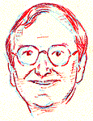

This is an archived copy of History Matters, provided by the Roy Rosenzweig Center for History and New Media. To explore this content in a new interface, visit Who Built America?.


Philip Bigler teaches history and social studies at Thomas Jefferson High School for Science and Technology in Northern Virginia. He began teaching more than twenty years ago and has taught at a number of different high schools in the Washington metropolitan area. He also took a two-year break from his teaching to serve as historian for Arlington National Cemetery. That work led to his publication of two of his four books: Hostile Fire: The Life and Death of Lt. Sharon Ann Lane, and In Honored Glory: Arlington National Cemetery, the Final Post. Bigler’s teaching talents have been recognized with the Washington Post Agnes Meyer Outstanding Teaching Award, the Hodgson Award for Outstanding Teaching of Social Studies, the Norma Dektor Award for most Influential Teacher at McLean High School, and the United States Capitol Historical Society Outstanding Teacher/Historian Award. In 1998, he was named “National Teacher of the Year” in the annual competition sponsored by The Council of Chief State School Officers and Scholastic, Inc.I. STARTING OUT1. What drew you to history teaching? Were you, for example, drawn by the subject matter, by particular teachers, or something else? I developed an interest in history in 4th grade. At that time, I was in Glenview, Illinois and we were studying Illinois state history. I was fascinated by the exploration of the Mississippi River and it seemed to me that history was really a great story about REAL people. I was inspired to go into teaching by two outstanding educators: in 8th grade I had a nun at Sacred Heart School in Jacksonville, Florida—Sister Mary Josephine—who took an interest in me and she was one of the most caring and compassionate people I have ever known. Then at Oakton High School in Vienna (Virginia), I had another teacher, Colonel Ralph Sullivan, who was just back from Vietnam (Marine helicopter pilot). He taught U.S. History and was tough and no nonsense. He showed me the importance of rigor in academics. When I went to college, I decided that I was going to study a subject matter that I enjoyed rather than worry about getting a job. I still believe that college is a place to become educated, not employed. 2. You talk about Sister Mary Josephine as “caring” and Colonel Sullivan as “tough.” Many people would think of these as very different kinds of teaching styles; do you think that they can be brought together? Do you try to do both? I believe that each teacher has to develop his/her own style. You can’t try and mimic someone because you won’t be true to your self. My students all know they can come and talk to me. If they have a problem, I will listen to them. For instance, if a student couldn’t study for a test, I will often allow them to make it up (assuming it is a good reason). I send cards to students when they are sick or if there has been a tragedy in their lives. I recognize each student’s birthday in class. At the same time, I believe in content. Students need to know something when they leave high school. They should have a solid and sound awareness of the past and those who came before them. I also expect students to say “thank you” to people and to respect others. Every time we have a guest speaker, our class sends a thank-you banner to that person. The kids also write valentines and holiday cards to the veterans at the United States Soldiers' and Airmen’s Home. 3. Where did you go to college? Why did you like/dislike about the history classes you had in college? I went to James Madison University for a B.A. and M.Ed. (Secondary Education/History) and to the College of William and Mary for a M.A. The professors I had in college were truly outstanding and inspiring. We had a group of history majors who loved our subject and we all bonded over our classes. Usually, we went to the Student Center after class and talked about what we did that day. 4. When did you start teaching? What are the places you have taught? I began teaching in 1975 at my alma mater, Oakton High School. I taught seven years and then quit for three. I went to work as the Historian at Arlington National Cemetery during that interim. I went back to teaching in 1985 at Bethesda-Chevy Chase High School in Montgomery County, Maryland and then came back to Fairfax in 1991. I have taught at the following schools: Oakton High School: 1975–1980; W. T. Woodson: 1980–1982; Bethesda-Chevy Chase: 1985–1991; McLean High School: 1991–1996; Thomas Jefferson High School for Science and Technology: 1996-present. 5.Which courses have you taught? You name it, I’ve taught it: United States/Virginia History; World Civilizations; World History; Russian History; Humanities; AP U.S. Government; National, State, and Local Government; Contemporary Issues; Middle Eastern History; Modern European History; Political Science; Economics; and Geography. 6. Which are your favorite courses to teach? Why? I prefer to teach American History, Humanities, Government, and World History. I guess I like them because they deal with the entire human experience and you always learn something new each year that you teach these classes.
II. TEACHING THE SURVEY7. In what formats do you teach the US History Survey? I try to vary my instruction. You can’t just lecture every day although I do lecture from time to time—actually fairly regularly. Lecture has gotten a bad name today and I think that is unjust. I also do lots of historical simulations where students stage presidential elections, debate great issues confronting the Greeks, prepare Islamic/Mid-Eastern festival projects, recreate the trial of John Brown, etc. We also do several researched-based assignments on the Internet. Reading is a major component and I try to make sure the students have good outside readings that make history come alive. We do just about everything. You also have to change your instruction to the personality of a class. It is different year to year and I think that is what is most exciting about education today. 8. Could you say more about your simulations? What kind of preparation do you and the students need to do for a recreation of the trial of John Brown? What do you think the students get from an exercise like that?
9. What kind of Internet based research exercises do you do? What are the values and limitations of such exercises? I have several “Gateway” sites on my own homepage <http://www.tjhsst.edu/~pbigler>. I may ask the students to research William Jennings Bryan and the Gold Standard utilizing the Progressive Index online. Or they may be asked to review the diaries of Eugene Ring, who was a miner in the Gold Rush in the 1840’s. The value of such assignments is that the students have unprecedented access to information and resources from libraries, colleges, and other institutions. The downside is that sometimes it is better to use a book than the Internet. The kids are becoming too Internet dependent and that is their first source when researching. Libraries offer much and actually can have much more in depth materials. 10. What are the most effective assignments that you use in the U.S. Survey course? What is good about them? I do a very good historic letters project where the students write each other as if they were living in the turn-of-the-century. It is good because it requires students to research, write, and to role play. It also shows them the value of letter writing in general and the idea that common people do make history. Letters are a valuable source to the historian even when written by non-famous people. My 1960 computer simulation is a true highlight. The students get excited about politics and history and they see what is what like to have an election decided by only a few votes. They come away with the understanding that voting counts and that in a democracy, it is one of the most important responsibilities of a citizen. 11. What are you simulating in the 1960 election? How does that work? The 1960’s campaign simulation is a computer program where the students decide where to allocate resources and where to campaign with their candidate over a mythical nine-week period. Each week, a new poll comes up and shows all of the 50 states and who is leading in them. It was put out by SSI about 10 years ago and is out of print. It was never intended for classroom use but I modified it and created lesson plans to make it an appropriate classroom activity. 12. I like the phrase you used earlier about the “personality of a class.” Can you give me a sense of two different kinds of class “personalities” you have experienced and how that affects your teaching? Class personalities, hmmm. Some classes are much more active and involved than others. This year, my afternoon classes were enthusiastic and excited. The kids asked loads of questions and the discussions were great. My morning classes had nice kids, but they were very quiet and, as a result, required a different approach. We did more small group stuff with them. 13. What are the biggest themes that you try to convey in the U.S. survey course? What are the organizing principles? Chronology is the biggest organizer for history. I still believe that you have to take a basic chronological approach to the subject. I have made exceptions—this year I began with Civil Rights and modern U.S. History. I take the kids through the entire history of the Middle-East from Biblical times to the present in World Civilizations. But things build upon each other so I still think chronology is important. 14. What are your most important goals in teaching the survey course? What you most want students to take away from a U.S. survey course with you? I want students to have a basic sense of time— for example, to know when things happened and why. I expect them to understand the overall themes in history—not necessarily remember the specific facts but to have an understanding. If the students know what happened in World War I, then Bosnia today should be no surprise. I want students to leave my class with the sense that they have been through something significant and relevant to their lives—that they can take away lessons from history and apply them to their own lives. History is the study of villains and heroes, of triumph and tragedy, of good and evil. Kind of like the real world. 15. To what degree does the pressure to teach the basic “facts” come into tension with your goals of having either a broad “understanding” of historical processes or a sense of how history connects to their own lives? Do current textbooks support or interfere these goals of understanding and personal connection? Textbooks are just dull right now. We need narrative histories that tell a story. They take fascinating topics and reduce them to a sentence or two and take the life out of history. They’re ok for reference but we need better materials. Part of the problem is that they try to be all things to all people and they have to cover too much time. World History is the worst. How do you cover the entire history of human civilization in less than 1,000 pages? 16. Having also lived and taught in Northern Virginia for the past two decades, it seems to me that our students have changed dramatically in social backgrounds since you started teaching—reflecting, in part, larger changes in the ethnic make-up of the nation. Has that affected the teaching of a specifically national history; the story of the United States? I believe that one of our roles as educators is to pass on a respect for our nation and its institutions. Yes, we have flaws, and we teach those, but ultimately we are a nation grounded on the concepts of the Declaration of Independence which states that all people have rights and that governments are created by man to secure those rights. I believe that the very concept of being an “American” means that you are a mixture of many different cultures. In the Killer Angels (Michael Shaara’s historical novel about the Battle of Gettysburg), Colonel Joshua Chamberlain gives a speech where he says, “In America, there is no such thing as a foreigner—only free or not free.” I would change the later today to “only educated or uneducated.” III. REFLECTIONS ON TEACHING17. What is your most memorable teaching experience (A particular class? A particular encounter with a student?) I guess my most memorable moment with my students was several years ago, I had two immigrant children who had fled a Communist country with their parents. We were standing on the White House lawn for an arrival ceremony and President Bush came out and waved to the kids. It was such an amazing life journey for these kids to flee totalitarianism and now to be standing in front of the most powerful person in the world and to be acknowledged by him. I thought that was wonderful. 18. What was your worst teaching experience? My first year as a teacher, the school created classes for me three weeks into the semester. They asked each teacher to choose five students to give me. Of course, I had the classes from hell and it was one of the harder years in my life. 19. What about the best? I love doing field trips with the kids. Each one is different and exciting. Standing on Little Round Top with the students after having read the Killer Angels is still one of the great things I do. 20. What interests students most in your classes? I think the students know that I believe that what I am doing is important. I love my subject matter and I think that is something they always remember. 21. How has teaching changed over your career? Teaching has changed—kids are different. But unlike a lot of people, I think in general, this generation is better than those in the past. They are doing things in high school now that we wouldn’t dream of doing 20 years ago. The days of straight lecture are over and the students are more involved in their own learning. The biggest problem we have is short attention spans and the fact that a lot of students are not great readers any more. 22. What constitutes good teaching? Good teachers are zealots. They are totally committed and they won’t give up. If you look at the truly gifted teachers, that is the common denominator. There are lots of different styles and different philosophies—but they all believe in what they are doing.
|
Interview conducted by Roy Rosenzweig; completed in January 2001.